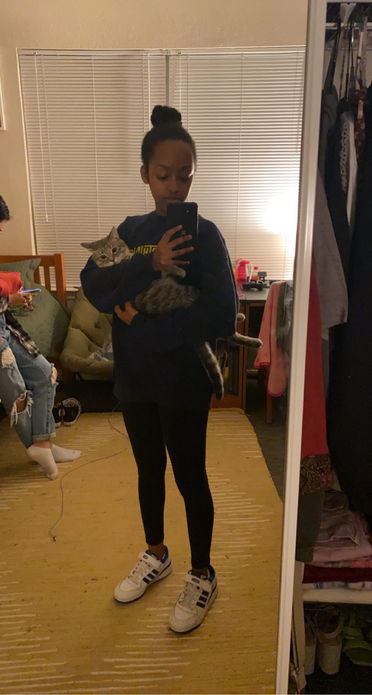
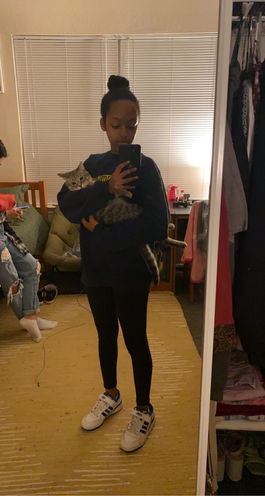

At school I am involved in Elon Finest dance team and Elon Tonights sketch comedy club. I joined finest fall semester of my freshman year and continue to enjoy being a part of the team. I have crated beautifule bonds with everyone on the team and have met some of closest friends from the club. This school year I am the costume chair. This means that I responsible for desiging team merch and deciding what we wear at our performances. I think this is a fun leadership role that also allows me to be creative.
For Elon Tonight, I have been mainly invovled as an actress. I have enjoyed participatin on screen because it's always been an interest of mine, however, I have started to work behind the scenes for some projects as a first assistant camera person, sound person, and script supervisor.

One of my favorite things to do with my friends and family is to try new foods. I like all cuisines and usually it's hard to pick just one thing I really like. However, I am a huge fan of steak, tacos, and good Alfredo! Since I mainly stay around the Raliegh area, one would think I've tried the majority of the restaurants there but I have not. There are still a few restaurants that are on my list to try but some of favorites in downtown raliegh have been "The Pit", "Sir Walter Raleigh Cafe", "Raleigh Times", and Mojoe's Burger Joint. I am always down to eat icecream nomatter the weather, but a really delicious straweberry shortcake can be hard to beat

I enjoy spending time with animals. Growing up I did not really have any pets. I did receive two fish from the state fair one year and I named them Flash and Swim Shady. Flash and Swim Shady unfortunatley did not live for very long and I was back to having no pets. If I could have as many pets as I want I think I would have at least one dog and one cat. I used to not be a fan of cats but ever since my sister adopted her cat Harlow, I love them. Harlow, named after the rapper/singer Jack Harlow, is very cute but likes to keep to himself often. Occasioaly he will come sit with me but when he's done being around people he will retreat under a bed or couch.
 
